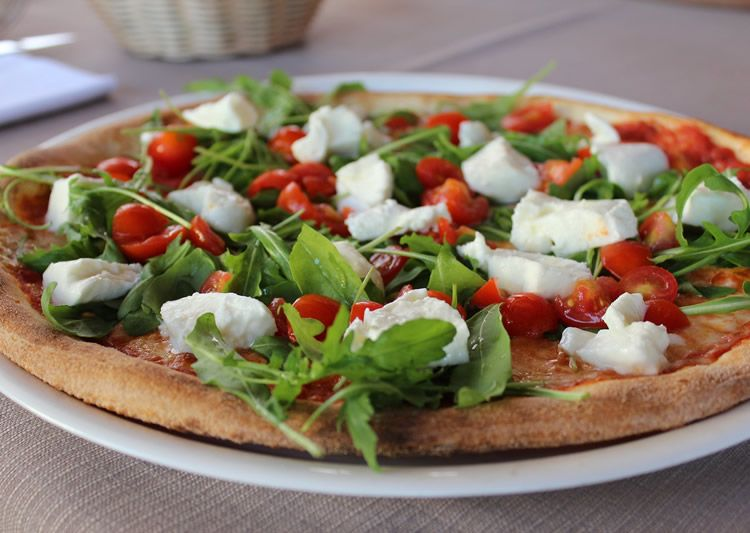

Pizza

Margareta
155 lei
Masa, tomate, mozzarela, aceite, sal
Zakazati
La Margarita es una de las versiones más simples de la pizza. Elegida por muchos debido a su
simpleza, la mitología popular cuenta que la pizza Margarita le debe su nombre a la reina
italiana Margarita de Saboya.

Integral
205 lei
Masa, harina integral, agua, aceite, sal
Zakazati
Prepara la masa de pizza en casa con harina integral y haz tus propias pizzas totalmente caseras
con esta receta tan sencilla.